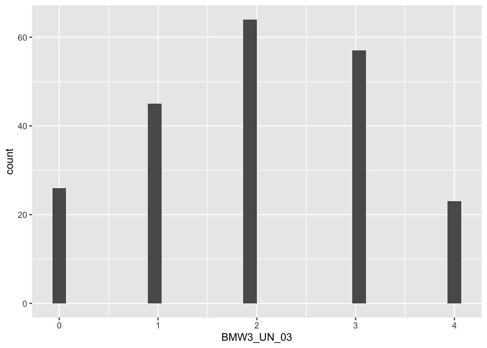

Last week, we worked with some publicly available data from a research project on mind wandering. Anna Schubert and colleagues (Schubert et al., 2024) conducted a study in which they created a 12-item questionnaire that measures how often your mind wanders without meaning to, how often you let it wander on purpose, and how aware you are when it happens. You can have a look at the questionnaire here. This week, we’ll revisit how to create a histogram and then calculate descriptive statistics for the questionnaire responses.
Reference
Schubert, A.-L., Frischkorn, G. T., Sadus, K., Welhaf, M. S., Kane, M. J., & Rummel, J. (2024). The brief mind wandering three-factor scale (BMW-3). Behavior Research Methods, 56(8), 8720-8744. https://doi.org/10.3758/s13428-024-02500-6
Aims of the activity
We are going to:
Download the files
Setup the appropriate bits and pieces in RStudio
Read in the data
Build a histogram
Calculate the mean, median and standard deviation
Create a new variable that combines responses from several questions
Build a histogram and calculate descriptive statistics using the combined score.
Watch the ‘How to’ video
If you haven’t done so already, this is a good time to watch last week’s ‘How to’ video on the handbook page on ‘How to build a plot’ .
Step 1: Download the files (skip if you’ve already done this)
To complete this lab activity you will need two files:
We’ll work with an example script called 4141_wk2_lab.qmd. This is a Quarto document.
We need a data file called data_bmw3.csv. This is a file that contains the responses of the participants in one of the studies reported on in the paper by Schubert et al. (2024). It is a file of the type .csv. This means that individual bits of data are separated by comma’s. We’ll often use .csv files.
You can download the files from the handbook (see Step 1 under Lab activity 2). Usually they will be saved in your ‘Downloads’ folder.
Next, upload the zip-folder as it is to your Files space on the R-server (bottom right quadrant; no need to extract the files first).
Finally, open the example script by clicking on the file called 4141_wk2_lab_act2.qmd in the Files space on the R-server.
Action: Work through this example script to complete the lab activity.
In this lab activity, we’ll practice:
How to load libraries using library()
How to read in a file using read_csv()
How to build a histogram using ggplot() and geom_histogram()
We first used those functions in week 1. This week you’ll have the opportunity to consolidate your understanding of these functions and get practice with them. Instead of asking you to run code that we’ve written for you, you’ll need to write it yourself. You don’t have to remember everything, though; we will give you hints along the way. Of course you can also revisit last week’s lab activity and the ‘How to build a plot’ video to remind yourself.
Then, you will learn a number of new things. We will explain the code for these line by line. You will learn:
How to calculate descriptive statistics using mean(), median(), sd() and range()
How to combine responses from several questions into one score using mutate()
Step 2: Setup
Before we can do anything, we need tell R what packages we want to use. We use the function library() to do that. It is useful to have a section at the top of your script where you load all the relevant libraries.
Action: In the code chunk below, write code to load the libraries by using the library() function. We need the packages here and tidyverse. After you’ve written the code, make sure the run the code chunk (click on the green arrow in the top corner of the code chunk).
library(here) # the 'here' package helps with finding your files
here() starts at /Users/margrietgroen/stats/2627_year1
library(tidyverse) # the 'tidyverse' is a set of packages that handles almost everything you need to do with data
Warning: package 'ggplot2' was built under R version 4.4.3
Warning: package 'tidyr' was built under R version 4.4.3
Warning: package 'dplyr' was built under R version 4.4.3
── Conflicts ────────────────────────────────────────── tidyverse_conflicts() ──
✖ dplyr::filter() masks stats::filter()
✖ dplyr::lag() masks stats::lag()
ℹ Use the conflicted package (<http://conflicted.r-lib.org/>) to force all conflicts to become errors
Hint
Hint
We need to load two packages (here and tidyverse) using the library() function. First, inside the code chunk, write library() and put here inside the brackets. On the next line in the code chunk, write library() and put tidyverse inside the brackets.
Code
Check your code
This is what the code should look like:
library(here)
library(tidyverse)
You can add ‘comments’ in your Quarto document or even inside the code chunk (by putting a hashtag # before it) to remind yourself what each package does:
here # tells you what this chunk does
tidyverse # is a set of packages that handles almost everything you need to do with data
The complete code chunk should look like this:
library(here) # the 'here' package helps with finding your fileslibrary(tidyverse) # the 'tidyverse' is a set of packages that handles almost everything you need to do with data
Step 3: Reading in the data
The next step is to read in a data file. It is a file of the type .csv, so we’ll use the function read_csv() to do this. Inside the function, we tell R where to find the file and what it is called.
Action: Insert a new code chunk by clicking on ‘Code’ at the top and selecting ‘Insert Chunk’. Inside the chunk, use read_csv() to read in the data. Make sure to run the code.
Hint
Hint
Use the function read_csv() to read in the data. Start by writing read_csv() on the next line of the code chunk. Inside the read_csv() function, we need to tell R where to find the file. We use here() to help with that. So, in the code chunk, inside the brackets of read_csv() write here() and inside the brackets of here() add the folder the file is in. This may be 4141_wk2_lab. Together these parts specify the location of the file (also called ‘the filepath’). Then, you need to tell R what the file is called, including the extension (data_bmw3.csv). Both of the filepath and the filename need to be in double quotation marks (““). Finally, you need to tell R what the name of the object is that you want to ‘assign’ the content of the datafile to. You can choose the name yourself, but avoid spaces or special characters in the name (hyphens - and underscores _ are ok). You could name it data_mw. Use the assignment arrow (<-).
Code
Check your code
This is what the code should look like:
data_mw is the name of the object, followed by
<- the assignment arrow, followed by
read_csv(here("4141_wk2_lab", "data_bmw3.csv")) which includes the function, followed by the filepath and the filename.
Rows: 215 Columns: 19
── Column specification ────────────────────────────────────────────────────────
Delimiter: ","
chr (4): location, type, gender, education
dbl (15): subject, id, Age, BMW3_UN_01, BMW3_UN_02, BMW3_UN_03, BMW3_UN_04, ...
ℹ Use `spec()` to retrieve the full column specification for this data.
ℹ Specify the column types or set `show_col_types = FALSE` to quiet this message.
Action: Make sure you’ve run the code chunk. Then, check that you can see the ‘object’ (also called ‘data-frame’) that is named data_mw in the Environment (top right quadrant).
Step 4: Build a plot
Now we are ready to create a histogram of some of the data to visualise how many people selected each response option for item 3 of the questionnaire. Item 3 was “I am often absentminded.” Participants were asked to decide to what extent they agreed or disagreed with that statement. They chose one of the following options: “Fully disagree”, “Somewhat disagree”, “Neutral”, “Somewhat agree” or “Fully agree”.
The function we use for that (and for a lot of other plots you’ll make for research methods and stats) is ggplot(). Inside the function we tell R which data to use and which variable to map onto the x-axis of the histogram.
Action: Insert a new code chunk and code to use ggplot() and geom_histogram() to create a histogram of the responses to item 3. These are stored in the variable BMW3_UN_03 in the data that you read in during the previous step.
Hint
Hint
Use the function ggplot(). Start by writing ggplot() on the next line of the code chunk. Inside the ggplot() function, we need to tell R which data-frame (data=) and which variable to use (mapping=aes(x=))).
Then, we need to tell R what type of plot we want. We do this by adding a + to the line on which you’ve written ggplot(), then on the next line you add a ‘geometric object’, in this case geom_histogram().
This will give you a basic histogram. Revisit last week’s lab activity to remind yourself how to change any of the features (such as the colour, the background, c)
The complete code chunk for the basic histogram should look like this:
ggplot(data = data_mw, mapping =aes(x = BMW3_UN_03)) +# specifies data and variable to plotgeom_histogram() # specifies what type of plot
`stat_bin()` using `bins = 30`. Pick better value `binwidth`.

Action: Make sure you’ve run the above code.
So far, we’ve revisited code that we first encountered last week. Now we’re going to learn a number of new things.
Step 5: Calculate the mean, median and standard deviation
So far, we’ve summarised the data in a histogram and from it, we get an idea of the central tendency and variation in the responses. However, a histogram only gives us a visual impression, and descriptive statistics let us put numbers on what we see, so we can report it clearly, compare it across studies, and check it against what we expected before moving.
Action: Have another look at the histogram you made for BMW3_UN_03. Can you estimate values for the mean, median and range?
To calculate the descriptive statistics, we simply need to tell R what dataset we want to use and, within the dataset, which variable. This is done by providing the name of the data-frame (data_bmw3) followed by a $ (that is a dollar sign) and then the variable name.
Action: Run the code below to calculate the descriptive statistics.
mean(data_mw$BMW3_UN_03) # provides the mean
[1] 2.027907
median(data_mw$BMW3_UN_03) # provides the median
[1] 2
range(data_mw$BMW3_UN_03) # provides the range
[1] 0 4
sd(data_mw$BMW3_UN_03) # provides the standard deviation
[1] 1.179721
Instead of just seeing the values in the Console, we can store them. In that case, we need to assign the output from each function to an ‘object’.
Action: After running the code above, have a look in your Environment tab. You should now see the values stored there.
Step 6: Create a new variable that combines responses from several questions
So far we have look at the responses to individual items. However, single questionnaire items are noisy. A person’s answer to one question can be shaped by how they read the wording, or how they happened to interpret the response options. If several items tap the same underlying construct, combining them into one score (usually a mean or sum) lets these item-specific quirks average out, so the score is more reliable and a better reflection of the thing we care about.
The Brief Mind Wandering Three-Factor Scale (BMW-3; Schubert et al., 2024) is a good example. It is a 12-item questionnaire that treats mind wandering as task-unrelated thought and measures three dimensions: unintentional mind wandering, intentional mind wandering, and meta-awareness of mind wandering. Rather than asking one question about mind wandering and hoping it captures everything, the scale uses four items for each dimension and combines them into a subscale score by averaging.
Next, we’re going to calculate a score for ‘unintentional mind wandering’. Schubert et al. (2024) define this as task-unrelated thoughts that occur spontaneously. This contrasts with ‘intentional mind wandering’; defined as task-unrelated thoughts where attention is deliberately redirected away from the current activity.
Action: Have another look at the questionnaire items here. The first four items measure ‘unintentional mind wandering, while items 9-12 measure ’intentional mind wandering’. Finally, items 5-8 measure ‘meta-awareness of mind wandering’.
So, to calculate one score for ‘intentional mind wandering’, we calculate the mean across the responses to the four items used to measure that construct (BMW3_UN_01, BMW3_UN_02, BMW3_UN_03, and BMW3_UN_04). We do this by creating a new variable using the function mutate().
Action: Run the code below to create a score for ‘unintentional mind wandering’. Have a look at the data-frame data_bmw3. It will now have an additional variable.
Action: Now do the same for the ‘intentional mind wandering’ and ‘meta-awareness of mind wandering’ subscales. Create new code chunks to do so below.
Step 7: Build a histogram and calculate descriptive statistics using the combined score.
Now, let’s apply what we learned earlier to these subscales.
Action: Build a histogram for the responses on ‘unintentional mind wandering’ in a new code chunk below. You can use code you wrote before, but will have to change the variable name.
Action: Similarly, calculate the mean, median range and standard deviation for ‘unintentional mind wandering’ in a new code chunk below. You can use code you wrote before, but will have to change the variable name.